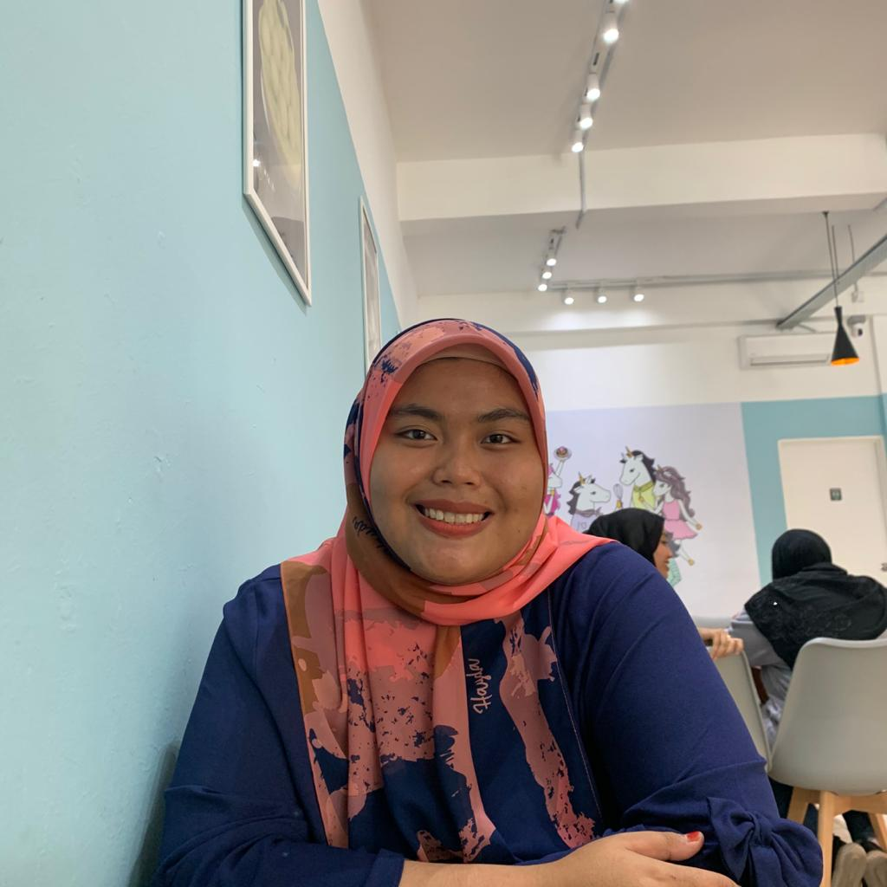

Biodata
Home Biodata Experience Education Gallery FamilyI love cooking
I love myself! I always keep repeating that word every time I feel myself is not appreciated. I was born in a strict family that most of my decisions are controlled by my family untill now i already grew up and my family not obviously involve in my decision making anymore. Well thats the old story that make me become stronger today. Now, when i turned into badmood i will cook. I found my new passion and hobby also it turned me to a better person since cooking teach me how to be more passion and creative. I also have develope my own Youtube channel named 'The Kuali Legend' everyone can cook with just a simple step and you will enjoy the tempting result of your dishes.

About Me
